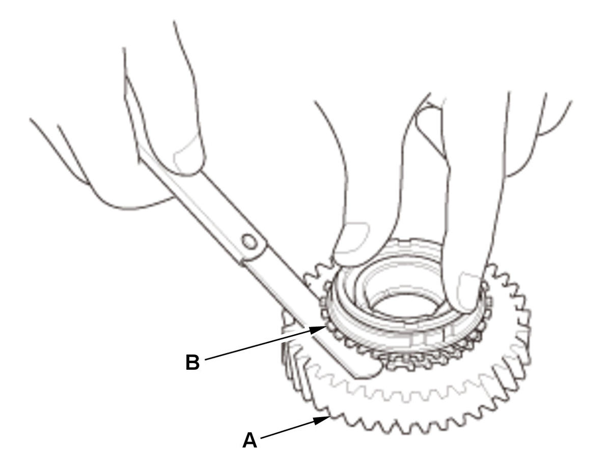
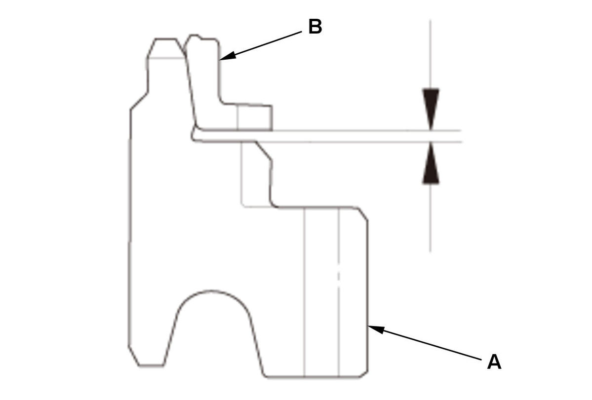
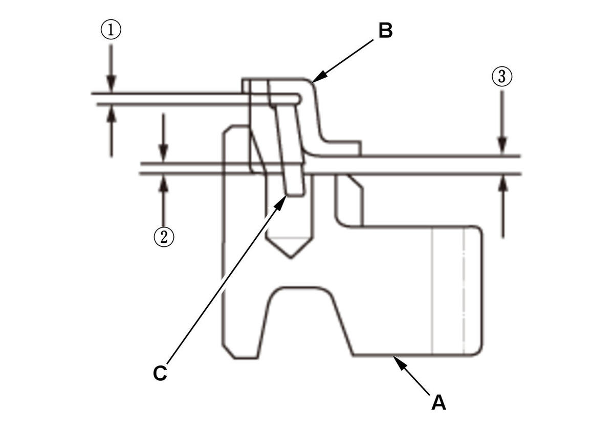

Synchro Ring and Gear Inspection (Except K20C1 (M/T)): Inspection
WARNING: This page is about a different variant/trim than selected.
- Synchro Ring and Gear - Inspect
1. Inspect the synchro rings for scoring, cracks, and damage (A). 2. Inspect the inside of each synchro ring (B) for wear. Inspect the teeth (C) on each synchro ring for wear (rounded off).
3. Inspect the teeth (A) on each synchro sleeve and matching teeth on each gear for wear (rounded off). 4. Inspect the synchro teeth on gear for scoring, cracks, and damage (A). 5. Inspect the thrust surface (B) on each gear hub for wear.
6. Inspect the cone surface (C) on each gear hub for wear and roughness.
7. Inspect the teeth on all gears (D) for uneven wear, scoring, and cracks.
8. Coat the cone surface of each gear with MTF, and place its synchro ring on it. Rotate the synchro ring, making sure that it does not slip.



Courtesy of HONDA, U.S.A., INC.HONDA, U.S.A., INC.HONDA, U.S.A., INC.
Synchro ring-to-gear clearanceDouble Cone/Triple cone synchro-to-gear clearance
9. Measure the clearance between each gear (A) and its synchro ring (B) all around the gear. Hold the synchro ring against the gear evenly while measuring the clearance. If the clearance is less than the service limit, replace the synchro ring and gear. Synchro Ring-to-Gear Clearance Standard: 0.70-1.49 mm (0.028-0.058 in) Service Limit: 0.70 mm (0.028 in) Double Cone/Triple Cone Synchro-to-Gear Clearance Standard: : Outer Synchro Ring (B) to Synchro Cone (C) 0.70-1.19 mm (0.028-0.046 in) : Synchro Cone (C) to Gear (A) 0.50-1.04 mm (0.020-0.040 in) : Outer Synchro Ring (B) to Gear (A) 0.95-1.68 mm (0.038-0.066 in) Service Limit: : 0.70 mm (0.028 in)  :
:0.50 mm (0.020 in) : 0.95 mm (0.038 in)